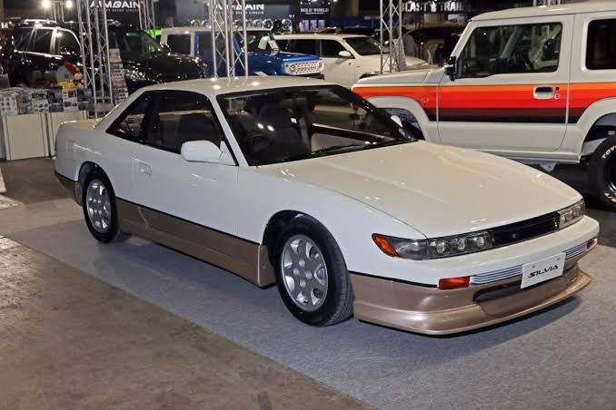
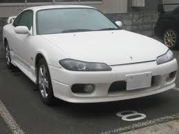

Nissan 180 SX

Prestaciones
puede venir con motores CA18DET o SR20DET, similares a los encontrados en el Silvia S13.
potencia del motor de 170-205 caballos de fuerza (hp), dependiendo de la versión.
par de motor puede ser alrededor de 260 Nm
aceleracion de 0 a 100 km/h en 7-8 s.
Velocidad máxima: Alrededor de 220-240 km/h
precio: 200,000 MXN
Nissan S13

Prestaciones
puede venir con motores como el CA18DET o el SR20DET. El SR20DET es un motor de cuatro cilindros en línea con una capacidad de 2.0 litros y turbocompresor.
potencia del motor de 170 y 205 caballos de fuerza (hp).
par de motor puede ser de alrededor de 260 Nm
aceleracion 0-100 km/h en 6-7 s.
velocidad maxima:220 a 240 km/h
precio: 100,000 MXN
Nissan S15

Prestaciones
vmotor SR20DET, similar al S13, pero con mejoras y ajustes en comparación con las generaciones anteriores.
potencia del motor alrededor de 250 caballos de fuerza (hp).
par de motor puede ser de alrededor de 275 Nm
aceleracion 0-100 km/h en 5.5-6 s
velocidad maxima:240 km/h
precio: 250,000 MXN
Nissan skylline R32 GT-R

Prestaciones
motor RB26DETT, un seis cilindros en línea con doble turbocompresor y una capacidad de 2.6 litros.
potencia del motor alrededor de 276 caballos de fuerza (hp).
par de motor puede ser de alrededor de 353 Nm
aceleracion 0-100 km/h en 5 s.
velocidad maxima: 250 km/h
precio: 500,000 MXN
,jpg.png) MENU
MENU